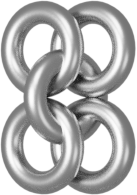
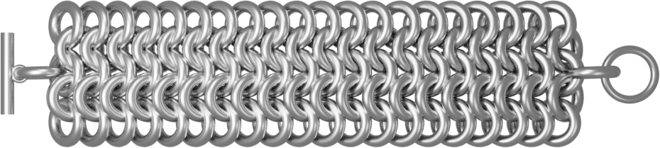

The knights of medieval times wore entire suits of interwoven rings. Here, we will learn how to replicate that pattern to make a basic chainmaille bracelet.
Preparing and ordering supplies
Step 1: Selecting your ring material
Go to theringlord.com and select your rings. You can find their selection of rings on the left side of their home page. Figure 1 ranks the difficulty of the materials available; it is recommended to start with an easier material, such as aluminum or copper.
Figure 1
Toughness or Difficulty is the force needed to bend a ring.
Springback is the tendency for a ring to "spring" back into its original shape. This is different from toughness as a ring can be springy and soft (much like the spring in a pen) or tough and not springy.
Avoid getting rubber rings, engineered plastic, or punched rings. It is unadvised to get carbon steel, plated, or enameled copper, but they can still work.
Step 2: Picking your rings
Purchase rings for your project. They must be 16ga 1/4" rings in whatever material you have chosen.
Figure 2
AR, or Aspect Ratio, is the proportion of a ring's inside diameter to its outside diameter. All weaves have a lower limit to their compatible aspect ratio, and some have an upper limit as well.
Purchase a clasp for your project. They are found on theringlord.com on the left under "jewelry supplies". We are using a French stainless steel clasp.
Figure 3
Ensure that your clasp can fit onto 16ga wire in the clasp description.
Step 4: Selecting your tools
Grab a pair of pliers to work with. It doesn't really matter which ones you use, but make sure you have two of them. Smaller pliers are easier to work with, but have a tougher time bending difficult rings.
Be careful! Pliers without teeth will leave less scratches on your project, but increase the chance of slipping and causing injury.
Weaving the chain
Step 5: Prepare your rings
Make two separate piles, one of opened rings and one of closed rings. You want about twice as many closed rings as you have open rings.
Step 6: Form the first unit
Figure 4
Take one open ring and put four closed rings on it, as in Figure 4. Close the central ring.
Step 7: Set the first unit

Figure 5
Rotate the four outer rings so that they are in two pairs and lay them down, as in Figure 5.
A unit is a single set of rings that can be repeated.
Step 8: Continue the first unit
Figure 6
From each pair, take one ring on the same side. Weave a new open ring and add two closed rings. Then, run the open ring through the two select rings of your first unit, as in Figure 6.
Step 9: Setting the second layer
Figure 7
Flip the two edge rings down towards the bracelet, as in Figure 7.
Step 10: Adding another layer
Figure 7
Repeat steps 8 and 9 for another layer.
Step 11: Continuing the chain
Figure 8
Repeat the above step, but stop just short of your desired length (~1/2").
Widening the bracelet
Step 12: Extending the width
Figure 9
Add another open ring vertically onto the bracelet, to two rings on a corner of the bracelet (as in Figure 9). Do not close it until the next step.
Step 13: Completing the vertical unit
Figure 10
Add another two rings to your open ring and close it to complete that unit.
Step 14: Adding another layer to the new row
Figure 11
Add just one open ring through three different rings as shown in Figure 11. Add another open ring onto the open ring and close it to add a new layer.
This is why our weave, European 4 in 1, is named as such; each ring is interconnected to four others.
Step 15: Completing the widening row
Figure 12
Complete the previous step until the end of your bracelet.
A sheet is the product of expanding a chain into two dimensions.
Completing the bracelet
Step 16: Tuning the length
Measure your wrist if you can. If you cannot, start with 7" if you have a small wrist, and go up from there. Keep adding to your bracelet until it feels a little too tight on your wrist.
Step 17: Adding the clasp
Figure 13
Add another ring that is only connected to the ending ring of the middle row and attach one end of your clasp. Do the same on the other end with the other half of your clasp.
Step 18: Your bracelet is complete!

Figure 14
Try your bracelet on! If it is too short or too long, just adjust it with the methods above.